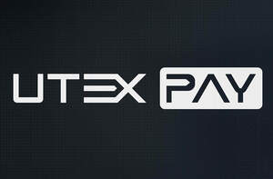
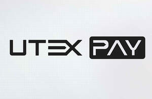

Trade Mark Journal No.2026/012 20 March 2026
UK00004351195 9 March 2026 (9,35,36,38,41,42,45)
Mark 1

Mark 2

- Class 9
- Software for commerce over a global communications network; Software, in particular in connection with digital currency, cryptocurrency, electronic currency; Downloadable software for use in the fields of cryptocurrency, and digital currency; Application software for mobile phones; Data processing apparatus; Banking cards [encoded or magnetic]; Multifunction cards for financial services; computer hardware and software (recorded and/or downloadable) for facilitating and administering payment, banking, credit card, debit card, payment card, electronic payments, electronic processing and transmission of bill payment data, cash disbursement, transaction authentication, routing, authorization and settlement services, fraud detection and control; apparatus for tracking, management and analysis of financial accounts via a global computer network; computer hardware and software for facilitating payment transactions by electronic means over wireless networks, global computer networks and/or mobile telecommunications devices; computer hardware and encryption software, encryption keys, digital certificates, digital signatures; software for secure data storage and retrieval and transmission of confidential customer information used by individuals, banking and financial institutions; computer software and hardware that facilitates the identification and authentication of near field communication (NFC) devices and radio frequency identification (RFID) devices; software application for use in connection with contactless payment terminals for the purpose of allowing merchants to accept contactless mobile commerce transactions; computer software designed to enable smart cards to interact with terminals and readers; computer software for processing electronic payments and for transferring funds to and from others; computer software relating to the handling of financial transactions; computer chatbot software for simulating conversations.
- Class 35
- Advertising, marketing and promotional services; Invoicing services; Database management services; Business analysis and information services, and market research; Advertising services relating to financial services; Business information; business appraisals; promoting the sale of the goods and services of others by means of rewards and incentives generated in connection with the use of electronic payment; business administration of loyalty and rewards programs; business consulting services in the field of online payments; administrative services in order to manage and track payment transactions via electronic communications networks for business purposes; business information management, namely, electronic reporting of business analytics relating to payment processing, authentication, tracking, and invoicing; business management, namely, optimization of payments for businesses; commercial and business management assistance; providing information regarding purchase of goods and services online via the internet and other computer networks.
- Class 36
- Financial and monetary services; Currency trading and exchange services; financial transactions relating to currency swaps; Financial services relating to buying and trading of commodities; brokerage; financial management; Electronic transfer of virtual currencies; brokerage services relating to financial instruments; Information services relating to finance, provided on-line from a computer database or the Internet; Processing payments for the purchase of goods and services via an electronic communications network; processing of credit card payments; Payment card services; exchanging money; Credit card payment services; Financial investment services; electronic funds transfer; Virtual currency transfer services; bill payment services; Electronic banking; financial management services; Electronic payment services; providing financial information; financial consultancy; processing of debit card payments; issuance of credit and debit cards; financial research; financial services provided over the telephone and by means of a global computer network or the internet; providing financial information via a web site; e-wallet payment services; money exchange and transfer; Electronic commerce payment services; Financial and monetary transaction services; clearing, in particular international credit card and direct debit clearing; administration of financial affairs; provision of finance services; money transmission services; processing of financial transactions both online via a computer database or via telecommunications; electronic financial transaction services in the nature of clearing and reconciling financial transactions via a global computer network; processing of credit and debit transactions by telephone and telecommunication link; financial services, namely, the provision of contactless mobile payments through merchants at retail, online and wholesale locations; financial transfers and transactions, and payment services; electronic processing of payments; electronic payment services involving electronic processing and subsequent transmission of bill payment data; information, advisory and consultancy services relating to the aforementioned services; debt collection services; loan services; loan (financing of -); credit services; financial risk management and assessment services; risk management consultancy [financial].
- Class 38
- Telecommunications services between financial institutions; Electronic communication services for financial institutions; Broadcasting of financial information by television; Electronic communication services for preparing financial information; Telecommunication services relating to electronic commerce and banking; providing multi-user access to a secure computerized information network for the transfer and dissemination of a range of information in the field of financial services; telecommunications for secure remote transactions and payment; providing of access for the computerised management of secure remote transactions and payment systems; electronic transmission of e-commerce transaction data and information; facilitating access to third party web sites via a universal login; providing user access to an online computer network that enables users to transfer personal identity data and share personal identity data with and among multiple websites; electronic exchange of data via computer networks; transferring information and data via computer networks.
- Class 41
- Training services relating to finance; Provision of instruction courses in finance.
- Class 42
- Software as a Service featuring computer software for use in banking services, online banking services, issuance of credit and debit cards, financial management services, financial affair services, monetary affair services, foreign exchange services; Software as a Service featuring computer software for use in financial transaction services, electronic payment processing services, processing payments for purchase of goods and services via an electronic communications network, money transfer and electronic payment services, electronic transfer of funds; Data security consultancy; Platform as a service (PAAS) featuring computer software platform for authenticating, facilitating, matching, processing, clearing, storing, receiving, tracking, transferring, and submitting trade data, exchanging of trading transaction details, and management of the overall trading lifecycle; Electronic monitoring of credit card activity to detect fraud via the internet; Electronic monitoring of personally identifying information to detect identity theft via the internet; digital asset management; Computer and technology services relating to online financial transactions and payments processing; Computer and technology services relating to buying, selling, trading, settlement, clearing, custody, storage and administration of digital assets and digital currencies; Computer and technology services relating electronic commerce using self-executing digital contracts; Computer and technology services relating financial document flow maintenance and administration; Hosting of computerized data, files, applications and information; Computer services, namely providing of interactive databases accessible via the Internet with information for determining score values.
- Class 45
- Legal services; Licensing of computer software; forensic analysis of financial transactions for fraud prevention purposes; security assessment of risks.
UTEXPAY LTD
Representative: SIA Agentura TRIA ROBIT